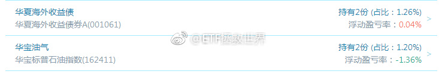

回复@fouvy:2010年-2015年3、4月，是ETF计划第二轮的持续时间。基本上到了当年4月第二轮的持仓品种就卖的差不多了。到2015年7月开始，第三轮计划正式开始。所以没有2015年初以来这个概念~//@fouvy:2015年年初以来呢...//@ETF拯救世界:回复@石头里的虫子:骂完了马上打赏999@ETF拯救世界:刚刚得到的最新消息，2015年7月以来，买的18个品种只剩一个浮亏1%了。只要系统和策略科学合理，在资本市场挣钱是没什么难度的。不赔钱只是第一步，想要赚的多，还有曲折的路要走。但是在正确的路上一直走下去，光明也就不远了。 
回复@石头里的虫子:骂完了马上打赏999//@石头里的虫子:大家集思广益一下，怎么样才能骂了E大又不被拉黑。//@ETF拯救世界:回复@秦雪晖23333:有啊，都拉黑了啊。//@秦雪晖23333:我总感觉这样不好，没人骂E大，这不真实，老大懂我意思吗@ETF拯救世界:刚刚得到的最新消息，2015年7月以来，买的18个品种只剩一个浮亏1%了。只要系统和策略科学合理，在资本市场挣钱是没什么难度的。不赔钱只是第一步，想要赚的多，还有曲折的路要走。但是在正确的路上一直走下去，光明也就不远了。
回复@秦雪晖23333:有啊，都拉黑了啊。//@秦雪晖23333:我总感觉这样不好，没人骂E大，这不真实，老大懂我意思吗@ETF拯救世界:刚刚得到的最新消息，2015年7月以来，买的18个品种只剩一个浮亏1%了。只要系统和策略科学合理，在资本市场挣钱是没什么难度的。不赔钱只是第一步，想要赚的多，还有曲折的路要走。但是在正确的路上一直走下去，光明也就不远了。
回复@仰望幸福45134:“次新”是一个概念，不是一个行业、市值或价值构成的指数。概念指数一般来说我们不会投资，但你想玩的话，据我的经验，熊市末期买入熊市中上市的，没有炒过的次新股，会在接下来的牛市中发大财。其它阶段我就不清楚了。@ETF拯救世界:怎么看待互联网上每天扑面而来的信息和新闻？比较关键的一点是要有独立思考的能力。新闻和信息，很多时候是假的。另一些时候虽然是真的，然而只是真相的一部分。有些人的观点不正确，是因为他本身能力有欠缺。然而有些人是故意说一些不正确的观点，也许是为了利益，也许是被逼无奈。所以独立思考特别重要。看别人说的话，注重论据，忽视结论。结论嘛，自己去下比较好。
回复@文小陈c:放心。纳斯达克，美国消费，美国医疗，标普，全部都在我们的监控范围内。美国未来在我们的组合配置中会有不小的比例。//@文小陈c:美国缩表会影响美股吗？如果美股高位崩盘，那是不是有机会入手美国上市的中国it巨头的指数？@ETF拯救世界:怎么看待互联网上每天扑面而来的信息和新闻？比较关键的一点是要有独立思考的能力。新闻和信息，很多时候是假的。另一些时候虽然是真的，然而只是真相的一部分。有些人的观点不正确，是因为他本身能力有欠缺。然而有些人是故意说一些不正确的观点，也许是为了利益，也许是被逼无奈。所以独立思考特别重要。看别人说的话，注重论据，忽视结论。结论嘛，自己去下比较好。
回复@IT曼尼爵:不一样。比如说，融创或者比特币。就是涨一万倍我都毫无感觉。因为那是不可把握的，是自己能力圈之外的。中概互联则不同，腾讯、阿里、京东，都是我比较喜欢的公司，他们组成的指数没有买入，对我来说，是遗憾。策略需要升级。只有不断升级和进步才能立于不败之地。@ETF拯救世界:怎么看待互联网上每天扑面而来的信息和新闻？比较关键的一点是要有独立思考的能力。新闻和信息，很多时候是假的。另一些时候虽然是真的，然而只是真相的一部分。有些人的观点不正确，是因为他本身能力有欠缺。然而有些人是故意说一些不正确的观点，也许是为了利益，也许是被逼无奈。所以独立思考特别重要。看别人说的话，注重论据，忽视结论。结论嘛，自己去下比较好。
回复@安全投资稳健增长:算是今年的失误之一。这个一定要认真反省，升级策略。//@安全投资稳健增长:没有持有互联网相关的指数，会不会有点遗憾？@ETF拯救世界:怎么看待互联网上每天扑面而来的信息和新闻？比较关键的一点是要有独立思考的能力。新闻和信息，很多时候是假的。另一些时候虽然是真的，然而只是真相的一部分。有些人的观点不正确，是因为他本身能力有欠缺。然而有些人是故意说一些不正确的观点，也许是为了利益，也许是被逼无奈。所以独立思考特别重要。看别人说的话，注重论据，忽视结论。结论嘛，自己去下比较好。
回复@溪南烟树:未雨绸缪。之前已经出过一份。目前大概是8%的仓位。8%是一个关键仓位，在一个组合中，低于8%很难对组合净值产生影响。无论是正面还是负面。综合来看，目前恒生的8%还算是ok。如果能到29500，还会继续卖出。不到的话，持有就ok了。@ETF拯救世界:$中证红利 sz399922$ 组合中的A股指数总算有新高的了
怎么看待互联网上每天扑面而来的信息和新闻？比较关键的一点是要有独立思考的能力。新闻和信息，很多时候是假的。另一些时候虽然是真的，然而只是真相的一部分。有些人的观点不正确，是因为他本身能力有欠缺。然而有些人是故意说一些不正确的观点，也许是为了利益，也许是被逼无奈。所以独立思考特别重要。看别人说的话，注重论据，忽视结论。结论嘛，自己去下比较好。
很多事情，对人，对事，都可以灵活处理。不能过于拘泥于某种刻板的教条。但关键一点，要有比较坚定的世界观。或者说，标准，底线。投资当然也是如此。买入，持有，卖出，构成了投资的全过程。无论是做哪个动作，最基本的投资世界观和标准不能变。这个标准不应该是涨了还是跌了，也不应该是别人说什么，而应该是自身对于买卖标的有一个基本的价值认识。涨了看多，跌了看空，像羊群和旅鼠一样跟着大伙跑来跑去，下场大概率不会太好。
回复@潇者_水清深也:现实会告诉我们答案。//@潇者_水清深也:E大，今天所有大佬（高善文，姜超等）全部看多了，怎么看啊//@ETF拯救世界:回复@用户5850653787:没必要。之前两年都是恒生涨的好，未来也许H跌的少呢。@ETF拯救世界:$中证红利 sz399922$ 组合中的A股指数总算有新高的了
呵呵，跌也不买。看你能跌到哪里。。//@ETF拯救世界:回复@bigblue83:爱跌不跌，我不看了。维稳还有一个月，相信依然是波澜不惊。看腻了，爱谁谁，跌也不买。//@bigblue83:如果这样跌一周，又可以搞a了@ETF拯救世界:某个品种已经进入瞄准镜了。还有一周。
刚刚得到的最新消息，2015年7月以来，买的18个品种只剩一个浮亏1%了。只要系统和策略科学合理，在资本市场挣钱是没什么难度的。不赔钱只是第一步，想要赚的多，还有曲折的路要走。但是在正确的路上一直走下去，光明也就不远了。